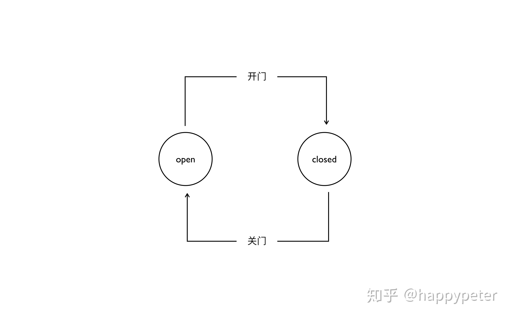
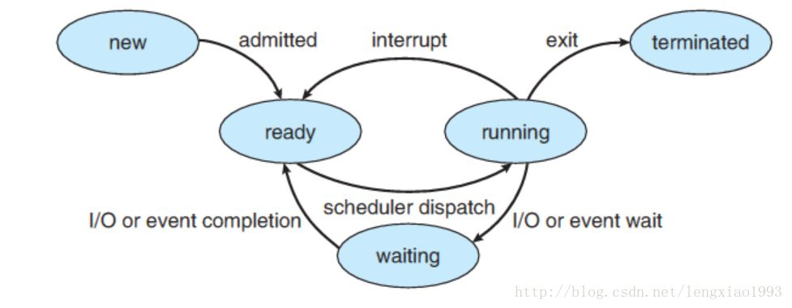
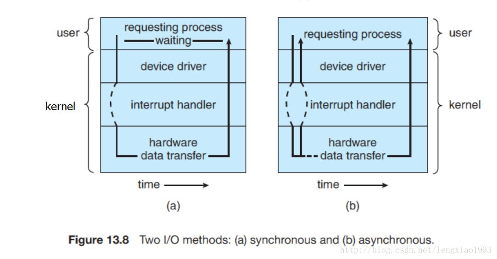

昨日的笔试中被问到读写锁的定义和用途，突然发现读写和锁这两个词分开来我很熟悉，但合在一块儿我就一脸懵逼了。所以今天我特意花了一大部分时间来研究这些机制和各种锁。尽管网上大家说的都不太一样，但我还是梳理了一下我所理解的同步，互斥，阻塞和锁。但是锁的内容有些繁杂，我们先分清同步和阻塞这两个概念。
程序运行的基本方式
在动笔之前，我需要强调的是其实编程是一种操作内容的手段，本质是对内存空间的修改和读取。进而的，各种程序之间肯定会起冲突，这一点无法避免。
这就好比排队，人不能容忍插队的现象，计算机同样不能容忍各程序争先恐后的抢夺同一部分资源或文件。我们作为程序员，对于自己的程序也无法容忍因为顺序问题导致的毛病。
所以为了完善这些分配法则，我们创造出了一系列的名词，一系列的算法。这些东西并没有什么高低之分，只是让我们在不同场景下能够方便的解决问题。
而最笼统的名词，就是同步和异步。
同步，异步
同步和异步其实是一种机制。他们没有约定俗成的写法和实现方法，只是一种目的！
同步其实就是顺序化，在不同任务之间的若干程序片断，它们的运行必须严格按照规定的某种先后次序来运行，这种先后次序依赖于要完成的特定的任务。最基本的场景就是：两个或两个以上的进程或线程在运行过程中协同步调，按预定的先后次序运行。比如 A 任务的运行依赖于 B 任务产生的数据。
例如登陆，必须等待验证完成后才能跳转界面。
异步和同步是相对的，同步就是顺序执行，执行完一个再执行下一个，需要等待、协调运行。异步就是彼此独立,在等待某事件的过程中继续做自己的事，不需要等待这一事件完成后再工作。线程就是实现异步的一个方式。异步是让调用方法的主线程不需要同步等待另一线程的完成，从而可以让主线程干其它的事情。例如网页加载时的图片加载。
同时，同步和异步是针对应用程序和内核的交互而言的。当然这一点也是相对而言的，它们的关系也可以是用户端网页和服务器，应用程序和操作系统等。
当我们说我们要用异步机制来解决问题时，我们可能会用到async函数等方法，并且用await来表明等待。但我们同样可以另开一个线程来解决这个问题。Ca depende.
但阻塞和互斥的概念就相对比较固定了
阻塞，非阻塞
我曾经学过阻塞，但是我们上课所讲的阻塞实际上也是一种机制，在各种编程语言中都可以灵活变通使用。但不知道为何，在网上大多数人口中就变成了内核的处理模式。
所以我挑了一个和我观点比较接近的知乎高分答案来帮助我解答这个疑惑。
怎样理解阻塞非阻塞与同步异步的区别？ - 萧萧的回答 - 知乎
https://www.zhihu.com/question/19732473/answer/241673170
在这个答案之前，我需要先复习一些状态机的知识。

我最开始接触状态机这个术语是在学电路的时候。但是状态机的概念却可以被广泛应用于各个领域，比如游戏AI。游戏AI的个体状态就是在不停的往来反复的。同理对于构成游戏AI的各个变量，也拥有这样一种状态。对于利用系统资源或者全局变量的各个函数，同样也会陷入到各种状态。
而阻塞和非阻塞是针对于进程在访问数据的时候，根据IO操作的就绪状态来采取的不同方式，说白了是一种读取或者写入操作函数的实现方式，阻塞方式下读取或者写入函数将一直等待，而非阻塞方式下，读取或者写入函数会立即返回一个状态值。从这个层面上来理解，进程的情况也是遵循状态机模型的。
说到进程，其进入阻塞状态的最常见常见和最常用例子就是信息阻塞，即用户态应用通过IPC机制通过内核发送消息时的阻塞。适当的回顾一下用户态和内核态，即用户空间和内核空间。

从图中可以看到，信息在用户空间传递到内核时，基于内核的处理方式，信息是不一定到达的。如果到这一步为止，我们就可以说，信息被阻塞了。当然，简单这么理解肯定是不够的，因为对于进程而言，信息的阻塞和自己有关，但在多个进程之间切换则与内核有关。
操作系统在进行进切换时，需要进行一系列的内存读写操作， 这带来了一定的开销：对于一个运行着 UNIX 系统的现代 PC 来说， 进程切换通常至少需要花费 300 us 的时间
在我的理解里，进程切换就意味着当前进程被挂起，尽管我们可能无法感知，但是对于计算机而言，或者说对于进程而言，时间是很漫长的。
所以接下来就是深入理解阻塞了。
进程间的通信是通过 send() 和 receive() 两种基本操作完成的。具体如何实现这两种基础操作，存在着不同的设计。 消息的传递有可能是阻塞的或非阻塞的 – 也被称为同步或异步的：
- 阻塞式发送（blocking send）. 发送方进程会被一直阻塞， 直到消息被接受方进程收到。
- 非阻塞式发送（nonblocking send）。 发送方进程调用 send() 后， 立即就可以其他操作。
- 阻塞式接收（blocking receive） 接收方调用 receive() 后一直阻塞， 直到消息到达可用。
- 非阻塞式接受（nonblocking receive） 接收方调用 receive() 函数后， 要么得到一个有效的结果， 要么得到一个空值， 即不会被阻塞。

我们所说的 “阻塞”是指进程在发起了一个系统调用（System Call） 后， 由于该系统调用的操作不能立即完成，需要等待一段时间，于是内核将进程挂起为等待 （waiting）状态， 以确保它不会被调度执行， 占用 CPU 资源。
- 友情提示： 在任意时刻， 一个 CPU 核心上（processor）只可能运行一个进程 。
那么为什么阻塞明明是一个进程的挂起操作，却总是和IO连在一起讨论呢？原因是， 阻塞这个词是与系统调用 System Call 紧紧联系在一起的， 因为要让一个进程进入 等待（waiting） 的状态, 要么是它主动调用 wait() 或 sleep() 等挂起自己的操作， 另一种就是它调用 System Call, 而** System Call 因为涉及到了 I/O 操作， 不能立即完成，** 于是内核就会先将该进程置为等待状态， 调度其他进程的运行， 等到 它所请求的 I/O 操作完成了以后， 再将其状态更改回 ready 。
操作系统内核在执行 System Call 时， CPU 需要与 IO 设备完成一系列物理通信上的交互， 其实再一次会涉及到阻塞和非阻塞的问题， 例如， 操作系统发起了一个读硬盘的请求后， 其实是向硬盘设备通过总线发出了一个请求，它即可以阻塞式地等待IO 设备的返回结果，也可以非阻塞式的继续其他的操作。
在现代计算机中，这些物理通信操作基本都是异步完成的， 即发出请求后， 等待 I/O 设备的中断信号后， 再来读取相应的设备缓冲区。 但是，大部分操作系统默认为用户级应用程序提供的都是阻塞式的系统调用 （blocking systemcall）接口， 因为阻塞式的调用，使得应用级代码的编写更容易（代码的执行顺序和编写顺序是一致的）。但同样， 现在的大部分操作系统也会提供非阻塞I/O 系统调用接口（Nonblocking I/O system call）。 一个非阻塞调用不会挂起调用程序， 而是会立即返回一个值， 表示有多少bytes 的数据被成功读取（或写入）。
非阻塞I/O 系统调用( nonblocking system call )的另一个替代品是 异步I/O系统调用 （asychronous system call）。 与非阻塞 I/O 系统调用类似，asychronous system call 也是会立即返回， 不会等待 I/O 操作的完成， 应用程序可以继续执行其他的操作， 等到 I/O 操作完成了以后，操作系统会通知调用进程（设置一个用户空间特殊的变量值 或者 触发一个 signal 或者 产生一个软中断 或者 调用应用程序的回调函数）。
此处， 非阻塞I/O 系统调用( nonblocking system call ) 和 异步I/O系统调用 （asychronous system call）的区别是：
- 一个非阻塞I/O 系统调用 read() 操作立即返回的是任何可以立即拿到的数据， 可以是完整的结果， 也可以是不完整的结果， 还可以是一个空值。
- 而异步I/O系统调用 read（）结果必须是完整的， 但是这个操作完成的通知可以延迟到将来的一个时间点。

总结
- 阻塞/非阻塞， 同步/异步的概念要注意讨论的上下文：
- 在进程通信层面， 阻塞/非阻塞， 同步/异步基本是同义词， 但是需要注意区分讨论的对象是发送方还是接收方。
- 发送方阻塞/非阻塞（同步/异步）和接收方的阻塞/非阻塞（同步/异步） 是互不影响的。
- 在 IO 系统调用层面（ IO system call ）层面， 非阻塞 IO 系统调用 和 异步 IO 系统调用存在着一定的差别， 它们都不会阻塞进程， 但是返回结果的方式和内容有所差别， 但是都属于非阻塞系统调用（ non-blocing system call ）
- 非阻塞系统调用（non-blocking I/O system call 与 asynchronous I/O system call） 的存在可以用来实现线程级别的 I/O 并发， 与通过多进程实现的 I/O 并发相比可以减少内存消耗以及进程切换的开销。
老张和茶壶
现在我们回到这个经典的例子。
出场人物：老张，水壶两把（普通水壶，简称水壶；会响的水壶，简称响水壶）。
1 老张把水壶放到火上，立等水开。（同步阻塞）老张觉得自己有点傻
2 老张把水壶放到火上，去客厅看电视，时不时去厨房看看水开没有。（同步非阻塞）老张还是觉得自己有点傻，于是变高端了，买了把会响笛的那种水壶。水开之后，能大声发出嘀~~~~的噪音。
3 老张把响水壶放到火上，立等水开。（异步阻塞）老张觉得这样傻等意义不大
4 老张把响水壶放到火上，去客厅看电视，水壶响之前不再去看它了，响了再去拿壶。（异步非阻塞）老张觉得自己聪明了。
在这个例子中，其实老张就是发送方应用。当老张在等待水烧开时，其实是等待内核态返回值。所以老张是阻塞的。同理，不等待的老张就是非阻塞的。
而对于水壶而言，普通水壶和响水壶对应的只是两种方式，无论哪一种，本质没有区别，等需要等待一段时间后才能返回，但是“响”这个动作是同步异步的关键，它代表了对于提水壶这个动作的处理方式。
因为老张时不时的看水有没有开，其实是在做一个while循环，这是对于本进程而言的处理方式，而响水壶只是提供了另一个处理方式而已。即同步异步的处理方式了。
编程中的同步和异步
我们说到同步异步只是一只手段或者是方式，对于应用中的进程互相访问其实也用得了异步和同步，比如UI界面和数据的连携，或者UI组件和主窗口的响应。无论是哪一种，同步异步只有对于不同场合的应用好坏，并无必须性。
互斥
数学上的互斥既是不可能同时发生的事件。
而编程或者说计算机中的互斥，针对的对象则是进程。在不同任务之间的若干程序片断，当某个任务运行其中一个程序片段时，其它任务就不能运行它们之中的任一程序片段，只能等到该任务运行完这个程序片段后才可以运行。
最基本的场景就是：一个公共资源同一时刻只能被一个进程或线程使用，多个进程或线程不能同时使用公共资源。
所以我们经常讲的都是进程互斥。
对立的概念则是同时性，某些资源可以被同时调用。比如对某文件的读操作。我们同样可以把这个概念套用在编程中，比如典型的互斥锁。这些我将会在后面的锁那一章讲明。
这篇文章写完的时候已经4月5日了，我花了很多的时间去学习法语，便把我的信息专业搁置了。法语的一切一切都让我痛苦，并不塔诺西。还是编程好玩。总之，征途继续，明天就是锁那一章了。